EAGER：从点击商品生成搜索词的意图扩展与业务对齐
EAGER 研究电商信息流里的具体入口：用户点击商品、返回信息流后，平台主动推荐一组可点击的搜索词。论文由阿里国际数字商业集团的 Shuwei Yuan、Mingqian Ding、Luxin Liu、Rong Xiao、Xiaoyi Zeng 完成，前两位共同一作，2026 年 9 月 7 日公开。它把课程式监督微调、查询多样性和生产点击日志奖励组合起来，使小模型生成的候选既能扩展购物意图，又能进入既有商业链路。
论文链接：arXiv:2609.07143。本轮未发现并核验到本文独立官方代码或项目页。以下分析依据原始论文全部十三页，线上和离线数字均为作者报告，未独立复现。
一次商品点击只暴露用户的一个明确选择，系统却要生成覆盖多种潜在意图的查询集合；通用大模型容易给出流畅但泛化、缺少个性化和优先级的搜索词。同时，真实点击与后续转化、格式约束和多样性相互牵制，单纯最大化监督数据的生成似然难以同时满足这些要求。
1. 背景和问题
1.1 商品点击之后，搜索意图尚未被说出来
传统查询补全已经拿到了用户输入的字符或完整查询，可以围绕这个明确锚点续写、纠错或推荐近邻词。EAGER 面对的 I2Q 场景不同：输入首先是一件刚被点击的商品，用户并没有输入自己下一步想搜什么。商品标题、类目、品牌和属性提供了语义线索，近期搜索与点击历史提供偏好线索，但这些信息仍不能唯一确定下一条查询。点击蓝牙音箱可能表示对便携性、音量、外观或品牌的兴趣，也可能只是查看价格；系统需要把尚未明确表达的兴趣转成可供选择的搜索入口。
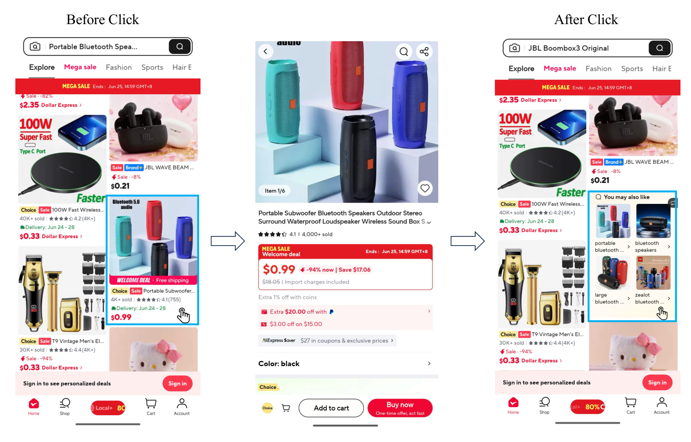
Figure 1 从左到右展示信息流、商品详情页、返回后的信息流三个界面，蓝色边框标出刚点击的商品及随后出现的推荐区域。两个箭头表达同一用户操作序列，而不是模型之间的计算流。右侧面板把商品相关查询与小图结合起来，用户可以直接进入搜索结果页，不必自己编辑关键词。因而一次推荐至少关联两段行为：先点击建议词，再在搜索结果中继续选择商品或购买。第一段是否容易吸引点击与第二段是否帮助发现商品，可能并不一致。界面中的四个候选位置又意味着系统不是只回答一道单答案问题，而是要利用有限展示空间覆盖几个有区别的方向。图中的价格和促销属于场景截图，论文没有据此建立价格优化结论。这张图能确认触发时机、输入来源和展示形式，却不能单独证明生成质量提升；后面的离线评估与线上漏斗才承担效果证据。把入口认清，才能理解作者为什么强调查询集合、用户上下文和统一排序，没有把任务简化成标题改写。
这个场景连接推荐和搜索，但输出对象仍是自然语言查询，不是商品标识符，也不是搜索结果文档。推荐系统先决定把什么商品放进信息流，用户点击后又给出一个新的、时效性很强的兴趣信号。查询推荐模块利用这个信号帮助用户从被动浏览转向主动探索。生成器不负责最终搜索排序，也没有在本文中直接生成商品购买决策。它的价值取决于下游搜索能否接住这些词，因此只让文本看起来与商品有关，尚不足以证明商业链路有效。
1.2 日志关联可靠，却很难完整描述潜在需求
现有生产系统的一类来源是日志统计：根据历史商品与查询的共同出现关系建立 I2Q，也可以先找相似商品再接查询，形成 I2I2Q。另一类来源是稠密检索，把商品和查询映射到向量空间，从已有查询库检索候选。它们都能利用真实业务行为，头部商品上的证据尤其丰富，但候选空间受既有日志或库存限制。新品缺少共同点击，长尾属性组合难以得到稳定估计；更具体的需求即使语义合理，也可能从未以相同文字进入查询池。
作者在引言中报告，线上查询池丰富程度与下游转化正相关，以此说明拓宽候选有业务动机。这是观察性相关，没有给出随机控制的查询池大小实验，不能倒推出任意扩容都会提高购买。增加重复、无关或难以召回商品的词，同样增加候选数量，却可能损害体验。EAGER 希望扩展能够被现有排序器识别和采用的有效候选，而不是无条件增加字符串。这个区别解释了论文为什么既需要多样性训练，又需要格式与词汇约束。
直接使用通用大模型可以生成平台历史上没有出现过的词组，但它缺少平台表达习惯、当前用户短期偏好和面板展示要求。模型容易把商品属性重新组合为语法通顺的短句，却把每个候选都写成同义改写；也可能生成过于宏观的类目词，掩盖用户最近在意的容量、材质或场景。跨境电商还涉及界面语言、国家市场和品牌保留策略，通用知识与平台当前可用商品、用户行为之间存在距离。论文采用小模型任务适配，就是要把这些可观测业务线索压入生成分布。
1.3 一条点击标签为什么不足以训练列表
日志通常只记录用户最终点了某一个建议词，未点其他词不等于这些词都错误，更不等于其他表达都没有价值。同一个商品可以对应宽泛类目、细粒度属性、功能场景和替代选择。如果把单条点击查询当唯一标准答案，模型会优先重复已有表达；如果把教师生成的所有词等权加入，训练又可能把未经点击验证的想象当真实偏好。本文在两端之间加入多来源监督和弱排序：真实点击优先，其次用户后续主动搜索，再用偏好模型过滤并排列教师扩展候选。
冲突也发生在列表内部。集中表达最显著属性的候选可能容易命中日志，但多个高度相似的候选会浪费空间。增加差异能够覆盖更多方向，却可能离开商品主题。格式、长度和违规词可以确定计算，用户是否点击则是有噪声的行为，不宜仅靠规则替代。EAGER 把学习拆成两阶段：监督阶段建立语义与表达能力，再用混合奖励调整生成列表的业务适配性。两阶段是作者的工程组织方式，论文没有证明这是所有场景下唯一最优的训练次序。
阅读时要区分三个层次：文本与后续点击商品标题的词汇一致性，候选是否彼此不重复并满足规则，以及进入线上系统后的点击与购买改变。它们由不同指标刻画，数值不在同一尺度，不能互相替代。模型可以提高软命中却损失精确字符串命中，也可以保持相关性基本不变而明显改善规则分。本文有价值的部分，正是提供拆解这些收益所需的消融，而不是宣称每个数字全面上涨。
2. 方法
2.1 多来源监督与递增课程
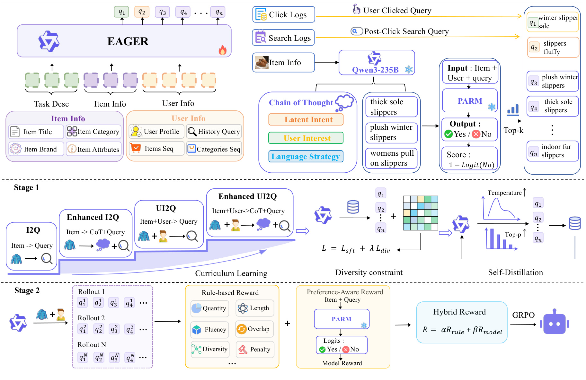
Figure 2 上部左侧列出任务描述、商品信息和用户信息，右侧把点击日志、后续搜索日志与教师扩展汇入监督列表。中部是监督训练路径：先只看商品直接生成，再加入教师推理依据，随后引入用户信息，最后联合用户信息与推理依据。多样性约束位于课程之后的增强环节，自蒸馏把模型抽样结果经过筛选回流为训练数据。底部第二阶段让同一输入产生多个完整列表，每个列表同时接受规则分和偏好分，再用 GRPO 更新生成策略。图中冰晶标识的教师和偏好模块承担提供信号的角色，生成器是被更新的对象；这不意味着线上每次请求还必须同步调用全部教师。两个阶段共享 PARM 的业务偏好尺度：它先决定教师候选的弱顺序，随后决定强化学习模型奖励。这减少前后阶段选择标准的直接冲突，但也意味着同一个偏好模型的误差可能重复传播。拖鞋例子说明候选从笼统品类扩展到厚底、保暖、室内用途等方向，不能把这些例子当独立实验。
图中的两处简写值得注意。右上角把评分写成一减负类 Logit，但正文公式六明确使用负类概率；两者数值范围和优化意义不同，以下遵循正文概率定义，同时保留原图供核验。下方偏好模块简写为商品加查询，正文与附录则明确包含用户上下文，因此实现接口按三元输入理解。框架图把模块连接起来，却不足以替代公式与训练细节。教师数据、课程任务、正则和奖励各有作用，并不是一次普通提示就能自动获得的能力。
监督目标按原文公式一组织：
符号解释：$Y$ 是监督用有序查询列表，$q^{\mathrm{click}}$ 是用户点击的建议词，$Q^{\mathrm{post}}$ 是其点击建议词后不久主动输入的搜索词，$Q^{\mathrm{llm}}$ 是教师扩展集合，分号表示拼接。这里顺序表达可信度和优先级，不等同最终展示排序。教师针对热门商品的标题、类目、属性与潜在用途生成候选，PARM 对教师候选打分后选择和排列；各来源完整混合比例与去重阈值未披露。
四个任务沿两个维度递增。I2Q 学商品到查询；Enhanced I2Q 加入由 235B 教师提供的属性、用途、搜索方向分析；UI2Q 引入用户画像、历史查询、点击商品与类目序列；Enhanced UI2Q 同时加入用户线索与推理监督。推理依据是训练信号，不能视为用户真实心理过程。标准监督目标为：
符号解释：$x$ 是子任务输入，$y_t$ 是目标第 $t$ 个词元，$y_{<t}$ 是目标前缀，$T$ 为序列长度，$\theta$ 是生成模型参数。目标逐词元提高输出概率，含推理内容时这些内容也参与监督。课程改变输入信息与目标结构，但仍是似然学习，不能自动覆盖所有未被标注的意图。
2.2 多样性正则与自蒸馏
在高质量样本上继续微调时，作者加入列表内相似度惩罚：
符号解释：$K$ 为查询数，$q_i,q_j$ 是不同查询，$\operatorname{sim}$ 为相似度，$\lambda$ 控制惩罚权重，求和包含所有有序的不同查询对。最小化该项鼓励不同表达，分母要求至少两个查询。过强惩罚可能迫使模型离开商品主题，权重要联合相关性选择。论文未充分说明相似度实现以及离散生成结果如何获得可微训练信号，不能直接假定采用某种句向量编码器。
自蒸馏用已经增强多样性的模型，在部分输入上提高温度与 top-p 抽样，然后删除格式错误、长度异常和违反规则的结果，把剩余输出重构为下一轮监督数据。教师来自模型自身，让模型学习原标签之外、自己能够生成且通过筛选的表达。筛选只能排除已定义错误，不能保证剩余数据都被真实用户接受。若偏好覆盖不足，迭代也可能强化既有盲点；原文没有给出迭代轮数和数据增量规模量化这一风险。
2.3 混合奖励与偏好模型
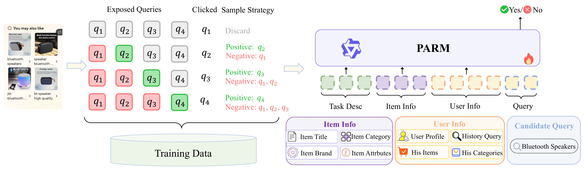
Figure 4 左侧用四行说明点击位置不同的采样规则。用户点第一位时丢弃整个事件；点第二位时第二位为正例、第一位为负例；点第三或第四位时，点击项为正例，所有前置未点击项为负例。点击项之后的查询均忽略，因为用户可能没有充分浏览它们。这个构造比把全部未点击曝光都判负更保守，也避免第一位置大量点击使训练过度依赖位置优势，但不是严格无偏估计：保留样本仍由原曝光机制筛选，第一位点击人群被排除，前置未点击也未必代表真实不喜欢。右侧把任务描述、商品字段、用户历史和一个查询输入 PARM，输出 yes 或 no，训练形式是语言模型判别而非传统二分类头。红绿位置只代表标签，没有提供样本数量、比例或用户检查概率，不能把“位置感知”误称为已消除位置偏差。
PARM 从 Qwen-4B 微调，与主实验的一点七十亿生成骨干不同。加入用户信息使同一个词在不同用户条件下得分不同，但冷用户怎样回退、跨语言是否充分覆盖，论文没有单独评估。它在监督阶段筛教师数据，在强化阶段给奖励，并非线上最终排序器；二者是否一致需另行验证。这样一个模型连接两个训练阶段，优点是标准较一致，风险是同一错误会被重复利用。如果历史日志偏爱热门品牌，即使扩展了候选，偏好模型也可能把新表达压到低位。作者提供生产排序一致性结果，能够支持当前系统兼容性，却不能单靠该结果否定上述可能。
符号解释：$\phi$ 是 PARM 参数，$a$ 为 yes 或 no 标签，$i$ 为商品，$u$ 为用户上下文，$q$ 为查询。该附录公式九提高观测标签概率，负例含义受采样策略约束；输出名为概率，不等于已经校准为真实线上点击率。
符号解释：$M$ 是规则数，$r_m$ 是子规则得分，$w_m$ 为权重，$x,Y$ 是输入与生成列表。规则涉及体验、数量、词汇重合、历史兴趣词、流畅度、多样性与敏感词惩罚。正文称八项，附录按类别描述，未提供完整权重表。词汇规则针对输入商品标题：短于三个词至少两个词匹配，否则至少四分之三覆盖。它与评估 Soft HR 的六成门槛及第二跳商品不同，不应混为同一函数。
符号解释：$p_{\mathrm{PARM}}$ 是负类概率，$r_{\mathrm{model}}$ 是单个查询偏好分，$R_{\mathrm{model}}$ 是列表平均分，$K$ 是查询数。仅在限定二标签归一化条件下，负类概率补数才直接等于正类概率；原文未展开标签词元归一化。均值关注平均质量，未显式刻画多候选竞争或点击一个词后其他词的边际价值。
符号解释：$\alpha,\beta$ 为两类奖励权重，其余符号同前。GRPO 从监督模型初始化，对同输入的多个列表采样、评分并更新。论文未写完整裁剪目标，也未披露组大小、KL 系数与全部奖励系数，不能拿通用算法默认值冒充作者配置。奖励没有直接包括支付金额或订单目标，线上支付改善属于链路效果，不能反写成直接优化了支付。
2.4 在线候选融合
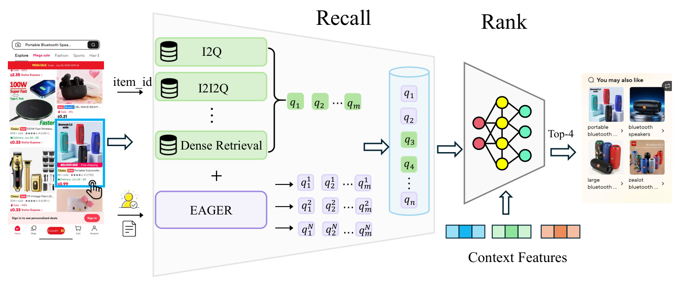
Figure 6 把生产链路分为 Recall 和 Rank：日志 I2Q、I2I2Q 属于历史关联来源，Dense Retrieval 属于向量来源，EAGER 是新增的第三类来源。多个生成列表与原候选汇入同一候选池，再由接收上下文特征的共享排序器选最终四词。图中输出上标区分抽样结果，下标区分列表内查询，不代表多个训练模型。最终面板接到 Figure 1 的触点，说明离线生成首位并非线上首位，生成候选也可能全部被排序器淘汰。这种插入方式允许原来源覆盖稳定需求，生成来源竞争长尾与细粒度表达；但论文没有分别报告去重后贡献和展示占比，无法计算支付增长具体有多少来自新词、多少来自旧词质量改善。
附录说明线上用 vLLM 独立生成十个完整结果，候选之间没有共享生成过程，计算与显存需求取决于总生成词元量。这是多次采样方案，不是十个候选零成本，也不能与最终四词混淆。作者称比束搜索压力低，却没有同硬件、同输出预算的延迟和显存对照，因此只能作为实现说明。训练使用二十四张 A100 80GB，监督阶段全参数更新，最大序列四千零九十六、有效批量六十四、学习率二乘十的负五次方、bf16 和一轮训练；强化阶段通过 ROLL 执行。公开这些信息有助于估算成本，却不足以恢复完整加工和服务配置。特别是并行采样增加总词元量后，是否仍满足请求尾延迟和峰值流量要求，需要部署者单独测量，不能由骨干较小直接推出服务开销可以忽略。召回阶段扩大候选也增加后续排序负担，图中没有展示截断和缓存策略；部署者应把生成和排序开销一并计入请求预算。
3. 实验结果
3.1 指标定义与偏好信号可信度
离线数据来自生产场景。主评测集完整样本规模、时间切分与语言分布未披露，附录二十一万点击 PV 专指 PARM 一致性验证，不应挪作所有生成实验规模。Hard HR 要求词与日志点击词完全相同，首位或全列表各算命中；所有 HR 以百分数报告。Soft HR 是精确命中或者查询至少六成词项出现在用户进入搜索后点击商品的标题中，是行为关联的词汇代理，不是句向量相似度或人工语义正确率。同义词缺失会漏判，短泛词容易过线，多语言分词也影响结果。
符号解释：$\operatorname{2grams}(Y)$ 是二元词组，$\operatorname{Unique}$ 去重，竖线表示计数；APD 为不同查询对距离的平均，距离是相似度补数，$K$ 为查询数。前者度量表面重复，后者依赖相似度函数，两者可不同向变化。原表按其展示尺度列值，未完整解释相似度实现，APD 不能直接当独立意图类别数。
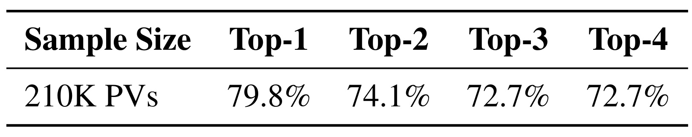
Table 6 在二十一万点击 PV 上比较两个排序器选中的前列集合。Top-1 一致率为百分之七十九点八，Top-2 为百分之七十四点一，Top-3 与 Top-4 均为百分之七十二点七；较大的集合必须整体一致才记匹配，不能把各列当逐位置准确率或加总。表格支持 PARM 与当前生产排序偏好有相当重合，从而提供方向较一致的软监督。它没有以随机曝光真实点击为独立真值，没有点击判别 AUC、概率校准或反事实效果，因此“七十九点八的点击预测准确率”是错误表述。生产排序器自身可能包含曝光和位置偏差，两者一致不保证更接近无偏用户偏好。
这组证据还暴露循环风险：数据选择与强化学习都依赖 PARM，如果它稳定偏爱热门词，生成器可能更容易复现生产偏好，而非发现遗漏的个性化表达。线上新增候选实验提供部分实用验证，却无法区分偏好泛化更准，还是与旧排序器更兼容。迁移时应额外观察未见商品、新语言、长尾用户及曝光位置切面，使用独立标注或随机化样本检查奖励与点击。表格只有一行聚合结果，没有不同候选池大小对照，也没有报告正负样本判别误差，不能据此推断完整排序稳定性。作者将其称为足够可靠的奖励，是当前工程判断；“足以用于本系统”和“普遍可靠”必须分开。另外，这里的前列是两个模型在同批事件上选的集合，不能理解成用户真实会依次点击的多个词，单条点击日志也无法提供这样的真值。尤其不能把前三个词的集合一致，解释为三个词都具有已验证的用户点击意愿。
3.2 主结果体现适配收益与指标取舍
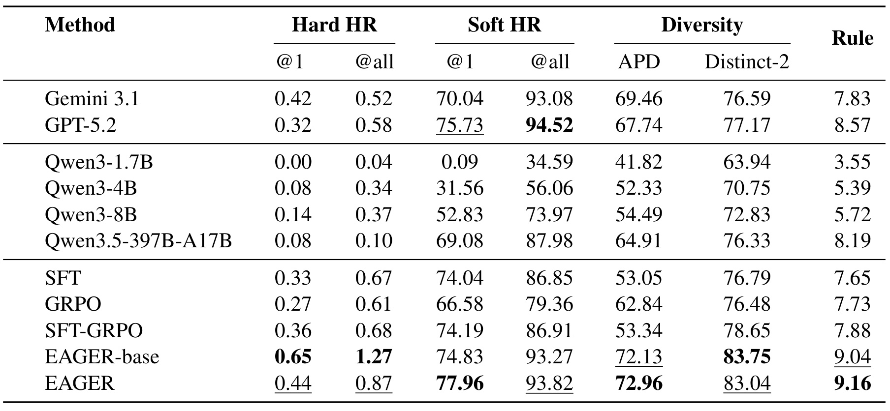
Table 1 依次列闭源模型、开源骨干与训练变体，列方向有精确命中、软命中、两种多样性与规则分。Qwen3-1.7B 零样本 Soft HR@1 仅零点零九，普通 SFT 到七十四点零四，说明在当前口径下任务适配远比直接调用小骨干有效。只做 GRPO 得六十六点五八，低于监督初始化后的相关性；SFT-GRPO 到七十四点一九，仍未得到完整框架的列表多样性收益。EAGER-base 相比该组合把 APD 从五十三点三四提升至七十二点一三，提示课程、多样性和自蒸馏整体改变了候选分布，但打包差值不能归给单个模块。
完整 EAGER 相比基础版，Soft HR@1 从七十四点八三到七十七点九六，APD 从七十二点一三到七十二点九六，Rule 从九点零四到九点一六；与此同时 Hard HR@1 从零点六五降至零点四四，Hard HR@All 从一点二七降至零点八七，Distinct-2 从八十三点七五降至八十三点零四。因此完整模型不是七列全部最优，它以部分日志复现和二元词组差异换取主指标与规则收益。GPT-5.2 的 Soft HR@All 为九十四点五二，还高于 EAGER 的九十三点八二，“全面超过所有通用模型”也不成立。优势应限定在首位软命中、APD、规则适配与当前生产链路上。
很低的 Hard HR 不代表几乎所有候选无效，因为开放词汇的一对多任务只拿一条日志表达作精确标准，合理同义表达也被判失败。但不能反向认为 Soft HR 高就完全正确，实际计算仍是标题词项阈值。复现应并列保存日志表达复现、第二跳商品词汇联系、列表内部差异，再检查用户点击和搜索可满足性。还要留意各通用模型的提示与采样预算是否一致，论文没有提供足以全面判断成本公平性的线上性能数据；小模型胜过某些通用大模型在特定离线列上成立，并不自动说明通用模型的所有意图理解能力更弱。
3.3 放大骨干的收益并非一致单调
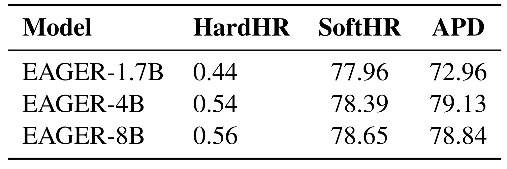
Table 2 比较一点七、四、八十亿参数骨干，HardHR 从零点四四到零点五四再到零点五六，SoftHR 从七十七点九六到七十八点三九再到七十八点六五。表头未重写首位下标，但数值与主表对应首位读数一致。更大模型在这两列提升，四到八十亿的软命中只增加零点二六个百分点，不能因规模翻倍就预期同比例业务收益。APD 在四十亿达到七十九点一三，八十亿反而为七十八点八四，表达差异并不随参数严格增加。三个点展示本次实验的趋势，尚不能估计稳定规模定律。
工程选择需连同缺失信息看。主表用一点七十亿，说明适配后的轻量骨干已经得到较强离线结果；选择更大模型，还需知道尾延迟、吞吐、总输出词元与显存预算。原文没有三种规模的线上对照和成本，不能凭零点几的软命中决定生产选型。APD 受相似度定义影响，若业务重视可检索性或属性真实性，也要加入这些质量维度。有强排序器的候选生成链路中，规模可能改变候选覆盖而未必改变展示，最好额外报告有效新词数、通过排序比例与支付漏斗。表中没给多次运行方差，较小差距也需要重新抽样确认稳定性。上述要求是根据规模表提出的复现判断，不是作者已经报告的额外优势；它们关系到离线收益是否足以覆盖在线增量成本，尤其独立多次采样会同时放大资源消耗。在资源相同条件下，多采样小模型与少采样大模型哪个更好，也是本表尚未回答的具体选择，不能凭参数数量替代这个对照。
3.4 各增强模块分别改善什么
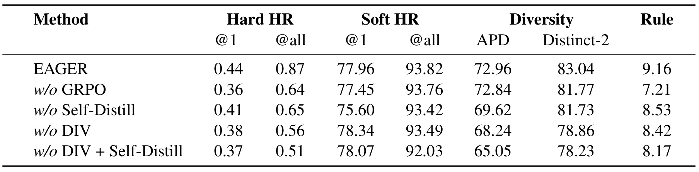
Table 3 第一行是完整模型，后面去掉关键组件。去除 GRPO 时 Soft HR@All 从九十三点八二轻微降至九十三点七六，APD 从七十二点九六到七十二点八四；Rule 却从九点一六到七点二一，Distinct-2 从八十三点零四到八十一点七七。因此最清楚的证据是强化学习改善规则适配，而非主要相关性全部来自强化学习。去自蒸馏使 Soft HR@1 到七十五点六零，APD 到六十九点六二，说明筛选后的自生成数据同时影响首位词汇联系与集合差异。但缺少训练数据总量控制，尚不能排除增加样本量本身贡献部分收益。
去掉 DIV 后 Soft HR@1 反而到七十八点三四，APD 降到六十八点二四，Distinct-2 降到七十八点八六。加入 DIV 相当于牺牲零点三八个百分点首位软命中，换四点七二 APD 和四点一八 Distinct-2，是明确取舍。原文一处把它解释成集中概率提高日志“精确相关性”，但实际变化是 Soft HR，不应改写为 Hard HR 提高；该行 Hard HR@1 为零点三八，确实低于完整模型。去掉多样性和自蒸馏组合后，APD 进一步到六十五点零五，两组件共同作用候选集合。
本表不能单独证明更高多样性导致支付增长。线上比较完整新增来源与旧系统，没有单独去掉 DIV 的线上处理组，作者用整体结果支持多样集合更有价值，仍属间接证据。要确认因果贡献，应固定候选预算、来源与排序器，随机比较不同多样性生成策略，并检查重排后的展示集合是否保留差异。否则候选级更分散可能被最终排序完全抹去。与此同时规则奖励和 Rule 指标复用了同一批规则，高分对定义内合规有意义，却不构成独立外部质量验证；仍需检查规则之外的属性幻觉和可售商品覆盖。
3.5 课程子任务的增量证据
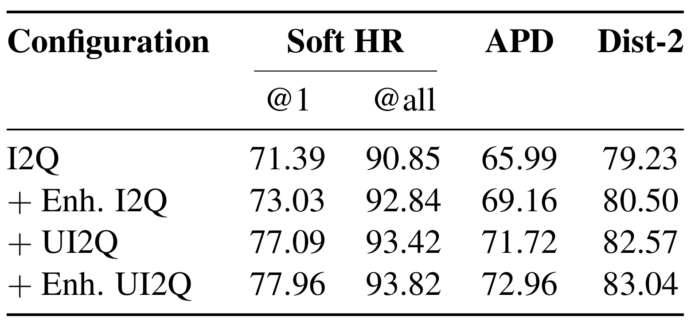
Table 5 保持多样性、自蒸馏、GRPO、骨干与优化设置不变，只按顺序增加子任务。仅 I2Q 的 Soft HR@1 为七十一点三九，APD 为六十五点九九；加入 Enhanced I2Q 后为七十三点零三和六十九点一六，APD 增三点一七，是最大单步增量。再加 UI2Q 后 Soft HR@1 为七十七点零九，增四点零六个百分点，是该列最大增量；最后加入 Enhanced UI2Q 到七十七点九六和七十二点九六。累计首位软命中增六点五七个百分点，APD 增六点九七，Distinct-2 也从七十九点二三到八十三点零四。
结果显示两类信号的不同作用：教师分析帮助探索用途和表达，用户信息帮助靠近当前行为。“推理”在这里意味着额外目标序列和监督信息，不代表恢复了真实决策过程。用户上下文收益不能只归给人口属性，因为输入同时包含近期查询、点击商品和类目历史，原文未逐字段消融。字段缺失或分布变化时，应先复现实用历史行为的增量，而非只复制画像名称。把这些信号在一张表里拆开，比打包方法总增益更有助于决定上线最小可行方案。
作者明确说明，这张表隔离当前递增设置中各子任务的边际贡献，没有比较顺序训练与随机混合多任务。因此不能声称课程顺序优于任意混训。新增任务同时改变监督类型和信息，如果总训练词元不同，还可能有额外训练量影响。后续可固定总词元预算，比较四任务混合、当前顺序和交换顺序，联合观察首位、全列表和规则分。表格足以说明上下文与教师依据值得使用，但尚不能把特定顺序当不可改配方。不同业务里商品信息已经很丰富、用户历史却很稀疏，最大增量所在的步骤也可能改变，需要依据本地缺口选择，而不是照搬此表差值。
3.6 超参数曲线与记号差异
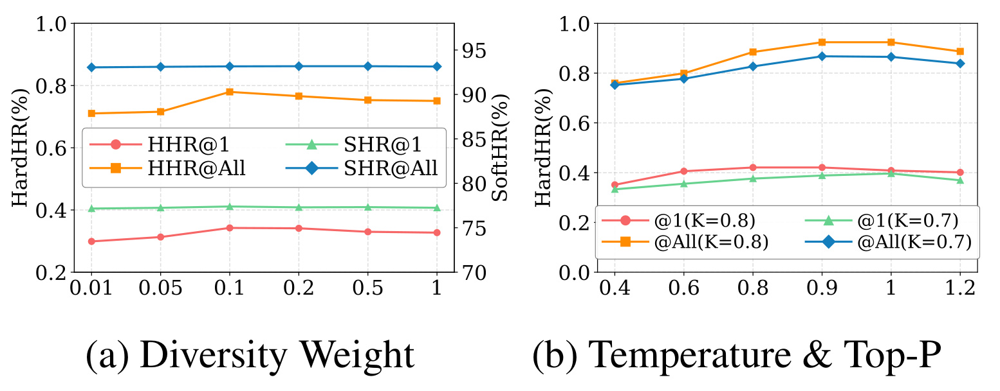
Figure 3 左图横轴是多样性权重，左纵轴是百分数 Hard HR，右纵轴为 Soft HR，不可按曲线高度直接比较大小。权重约零点一时表现较好，继续增大没有持续收益，说明相互远离受到相关性约束。全列表软命中很平，应关注变化量而非把高位当显著提升。右图温度由零点四升到零点九或一点零时全列表精确命中较好，再到一点二回落，可能是过度随机引入低质量表达；没有置信区间，微小点差不能推断稳定排序。
图题和子图标题写温度与 top-p，正文却写更大 top-k 更好，图例又用 K 等于零点七和零点八。这些小数更像核采样概率，但论文没有纠正记号，不能悄悄统一成已确认配置。该图支持调节正则与采样强度的定性结论，复现需确认参数、过滤条件和选择规则。温度峰值只对应当前离线指标，未给支付最优温度，不能跳过线上评估直接采用。左图还显示全列表软命中的变化远小于部分精确命中曲线，说明不同指标对抽样与正则的敏感度不同，调参不能只选最容易波动的一列。
要复现实验，还应固定每次生成的查询条数和总采样预算，记录不同温度下过滤前后的保留率；否则曲线差异可能同时来自样本质量与实际留下的候选数量。原文没有公布逐点过滤比例、随机种子和多次运行误差，无法判断峰值附近的小变化是否稳健。建议用独立验证集选择权重与采样参数，再在固定测试集汇报结果，避免直接反复选择测试集最高点。若同时调整两种参数，还需明确先后搜索顺序和保持不变的配置，才能把变化归到对应因素；这些是复现所需控制，不是论文已经完成的额外对照。
3.7 线上验证与商业漏斗边界
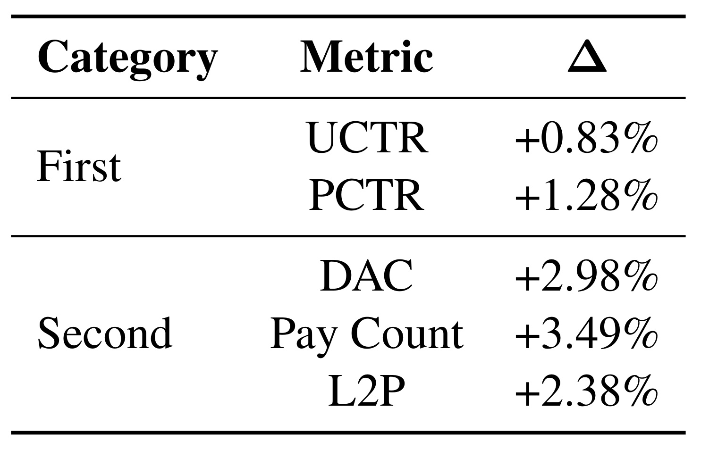
Table 4 报告九天、百分之五流量 A/B 测试，控制组是旧生产系统，处理组增加 EAGER 查询，其他下游组件相同。UCTR 相对提升百分之零点八三，PCTR 提升百分之一点二八；DAC、Pay Count、L2P 分别提升百分之二点九八、三点四九、二点三八。作者报告全部显著性小于零点零五且期间稳定，但没给每日曲线、置信区间和原始基数。这是相对增幅，不是点击率增加零点八三个绝对百分点，也不能将订单增幅换成交易额。
附录明确定义：UCTR 是该场景曝光用户中至少点一次建议词的比例，PCTR 是曝光层面点击；DAC 是每日经该场景触发搜索会话至少购买一次的独立用户，不能写成一般日活。Pay Count 是该场景归因支付订单，L2P 是从点击建议词到支付的转化率。购买用户、订单、转化率同升比仅点击更接近商业目标，却没有提供金额、利润、退款或复购。共享排序器使收益合理归于候选增强这一整体处理，不是替换全部检索或证明生成器可独立排序。
线上支持当前平台新增能力有价值，未精确拆给课程、偏好奖励、规则或自蒸馏。九天季节与用户结构有限，没有新品、长尾和各语言切面，虽这些是核心动机。附录单个箱包案例显示“大容量”“聚氨酯皮革”等细粒度表达，比泛类目词更贴合商品和近期行为，但案例不能代替总体切面。将其视为机制示意，将线上表视为整体增量，两者证据强度才不会混淆。要扩大上线，仍应检查新来源占展示比例、候选可检索性与长期付费质量，尤其不能因为词面更具体就默认商品供给和最终满意度更好。本文未公布这些检查的统计结果，不能凭整体支付正向填补。
4. 总结
4.1 对生成候选系统的启发
我认为 EAGER 最有价值的设计是把生成表达能力与既有业务链路的可用性拆成可分别检查的训练职责。多来源标签缓解单条点击对列表监督不足，课程引入商品理解和用户上下文，多样性与自蒸馏拓展候选，混合奖励处理规则和历史偏好。它通过统一排序让新旧来源竞争，线上结果贴近成熟系统渐进引入生成模型的情境。同类推荐业务可优先借鉴这个接口边界，再根据可用日志决定是否需要整套配方。
复现时我会先厘清建议词点击、后续主动搜索和第二跳商品点击，按事件时间建立样本，避免把仅能用于标签的未来行为泄漏给推理输入；再核验教师扩展词是否能检索到可售商品。列表评价同时保留词汇覆盖、可检索性、属性真实性与展示后多样性，避免短泛词轻易获得高 Soft HR，掩盖意图分辨不足。偏好模型和生成模型可以共享业务目标，但评估需要相对独立：如果用于训练的规则、排序器和标签生成器又同时包办验收，模型可能只是更熟悉内部标准，而没有真实提升用户体验。
4.2 局限与后续验证
第一，偏好模型依赖历史曝光与点击，位置感知采样只调整负例构造，没有去偏保证。它同时负责标签排序和强化学习奖励，偏差可能被重复放大。建议追加随机曝光或倾向校正评估，检查长尾候选是否被旧偏好压制，并把生产排序一致率和实际点击判别分开报告。特别应观察丢弃第一位点击事件是否改变人群分布，而不能只验证剩余样本上的拟合表现。
第二，离线主指标是词项启发式，标题冗长、分词、同义词和短查询会影响结果；主测试集规模、切分与语言构成缺失，迁移数字可比性有限。建议建立按语言、商品新旧、热度和用户历史长度分层的独立测试，辅以人工意图覆盖与商品可满足性，判断增益是否来自真实匹配。对跨境场景，应让同一个概念在不同语言中的表达得到一致评价，避免英语词汇规则直接套用后制造假差距。
第三，多样性相似度可微方式、奖励权重、GRPO 参数和自蒸馏规模尚不完整；负类 Logit 与概率、top-p 与 top-k 还存在原文差异。这些细节影响优化对象，不能凭经验悄悄填补。应优先请求代码或配置，再用最小实验核验每项数值尺度，确认同名实现没有优化完全不同的目标。
第四，线上验证是生成来源整体效果，缺模块级线上消融、资源成本、长期变化和细粒度归因。建议在相同候选预算下比较完整与简化模型，记录通过排序比例、尾延迟、订单质量和长期反馈。如果监督模型已经贡献大部分增量，就应据此衡量强化学习与更大骨干投入，不能仅因组件齐全就默认全部必要。各类规则变更后也要重新检验偏好和合规之间的平衡，而不是固定奖励权重长期运行。
这篇论文最扎实的证据，是任务适配后的离线提升、课程子任务增量、规则分消融变化，以及新增来源后的购买漏斗改善。还没有证明的是普遍无偏偏好学习、课程顺序最优、规模增加持续改善所有指标和完整端到端转化优化。沿着已证实与待证实的界线复现，比复制模块名称更有价值；而对现有业务最先要回答的，是生成的新词能否通过排序、被用户使用并满足后续商品发现需求。